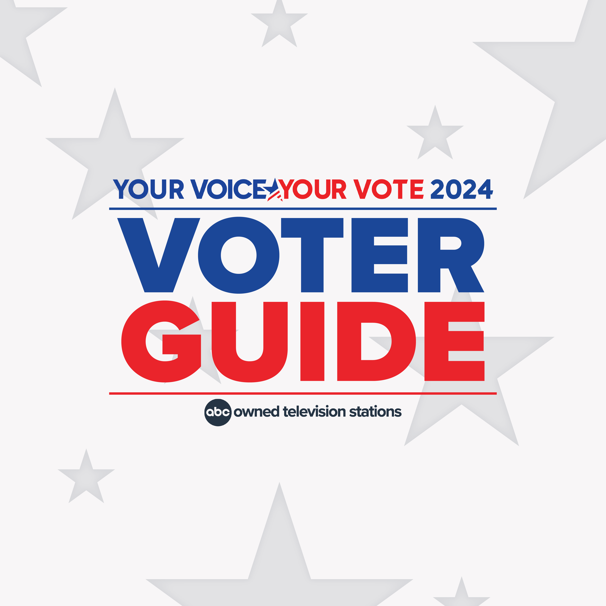
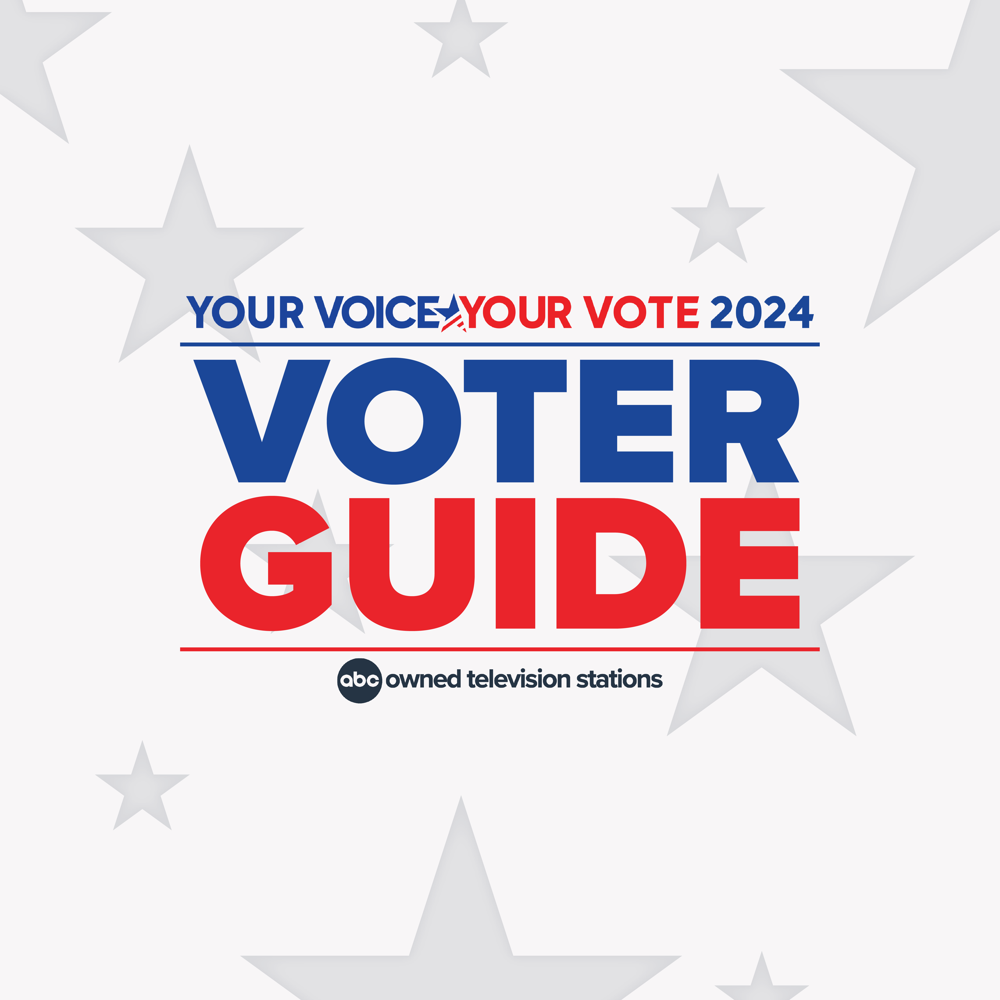

Table for Prop #1 - Abortion Amendment
| Prop | Argument for | Argument against |
|---|---|---|
| Prop #1 - Abortion Amendment | Prop 1 protects individual choices on reproductive care and the right to choose to have an abortion. | Keeping medical decisions where they belong—between a patient and their provider. |
Table for Prop #2 - Abortion Amendment
| Prop | Argument for | Argument against |
|---|---|---|
| Prop #2 - OTHER Amendment | Prop 2 protects individual choices on reproductive care and the right to choose to have an abortion. | Keeping medical decisions where they belong—between a patient and their provider. |
Table content for Prop #3
| Topic | Question |
|---|---|
| Assisted Reproductive Healthcare | Should all medically appropriate assisted reproductive treatments, including, but not limited to, in vitro fertilization, be covered by any health insurance plan in Illinois that provides coverage for pregnancy benefits, without limitation on the number of treatments? |
| Income Tax | Should the Illinois Constitution be amended to create an additional 3% tax on income greater than $1,000,000 for the purpose of dedicating funds raised to property tax relief? |
| Penalties for Candidate Interference with Election Workers’ Duties | Should any candidate appearing on the Illinois ballot for federal, State, or local office be subject to civil penalties if the candidate interferes or attempts to interfere with an election worker's official duties? |
Table content for Prop #3
| Topic | Question |
|---|---|
| Assisted Reproductive Healthcare | Should all medically appropriate assisted reproductive treatments, including, but not limited to, in vitro fertilization, be covered by any health insurance plan in Illinois that provides coverage for pregnancy benefits, without limitation on the number of treatments? |
| Income Tax | Should the Illinois Constitution be amended to create an additional 3% tax on income greater than $1,000,000 for the purpose of dedicating funds raised to property tax relief? |
| Penalties for Candidate Interference with Election Workers’ Duties | Should any candidate appearing on the Illinois ballot for federal, State, or local office be subject to civil penalties if the candidate interferes or attempts to interfere with an election worker's official duties? |